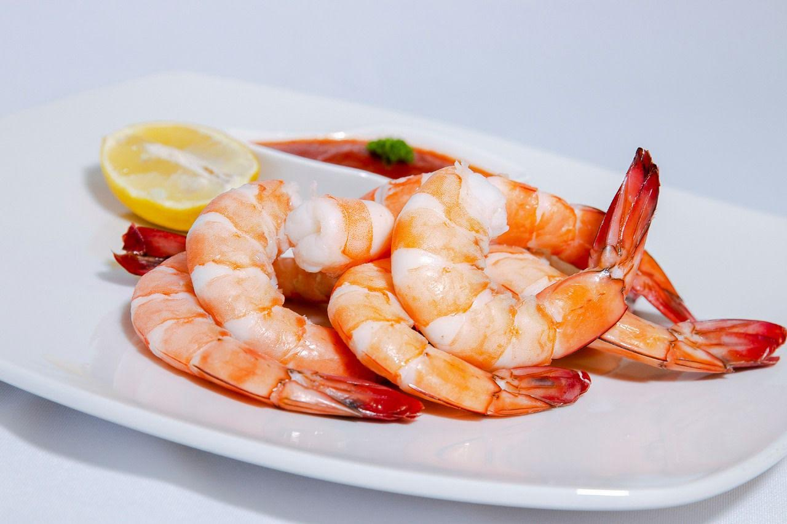

Wild Mexican Shrimp

We are the only major importer of Wild Mexican shrimp who can honestly say our shrimp is 100% Natural 100% of the time. We only use mechanized trawler vessels. Each of our ships has GPS on board and is fully traceable. Freshness and flavor is our top priority for our shrimp. Being equipped with on-board freezing capabilities, all of our shrimp are frozen shortly after catch, locking in their freshness.